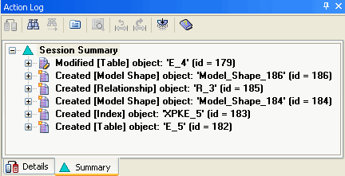

The Summary pane displays the net result of changes made to the model during the current session. It provides a filtered view of all the actions you perform on the model during the current session so that unnecessary tree information is minimized, which is especially helpful when you are working with large models.
The Session Summary node is the top-level node in the tree. All changes you make to the model at the object level and property level appear below the Session Summary node in the tree.

The Summary pane is similar to the Details pane except for the following differences: